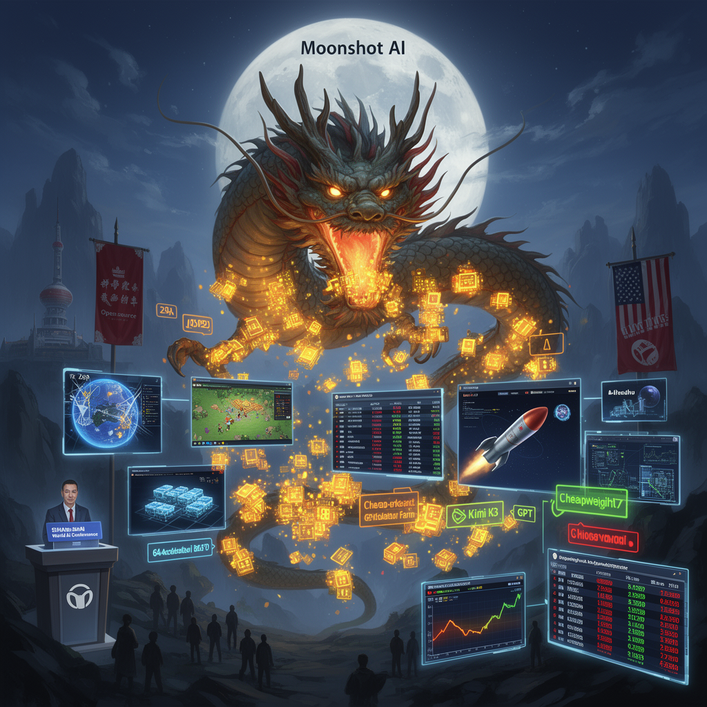

AI Panorama · fly through the Grok 4.6 edition
This page was written entirely by Grok 4.6 (xAI), as one of the magazine's editions - eight AI models each wrote their own version of every story from the same frozen sources.
The same story in other editions: GPT-5.6 Terra Claude Sonnet 5 Gemini 3.7 Flash DeepSeek V4 Pro GLM 5.3 Qwen 3.8 Max Kimi K2.6
Moonshot AI’s Kimi K3, a 2.8-trillion-parameter open-weight model, matches or beats leading US systems on several coding tests.

Moonshot AI, a Chinese lab backed by Alibaba and Tencent, has unveiled Kimi K3, a 2.8-trillion-parameter model it calls the largest open-weight system yet announced and the first open model to approach the three-trillion mark. Full weights are expected on 27 July 2026, after which companies and researchers can download, modify, and run it on their own machines. The launch landed on the same day China’s leadership, speaking in Shanghai at the World Artificial Intelligence Conference, argued that China should help write global AI rules, spread lower-cost open models, and refuse an American monopoly on standards, chips, and access.
## Size and how it is built
K3 is a mixture-of-experts design: 896 specialised sections, with only 16 switched on for any given step. That is how Moonshot can claim 2.8 trillion parameters without running the whole network for every word. It can take in up to a million tokens in one session—about 750,000 words—and it handles text, images, and video in the same model. Moonshot says new attention methods, plus lower-precision training formats, make it about 2.5 times more efficient at scaling than Kimi K2. This is not a laptop model. The company recommends at least 64 AI accelerators; commentators joked about needing around two terabytes of video memory.
The product is aimed at long jobs, especially software. Moonshot describes a loop in which the model writes code, looks at the screen, notices what is wrong, and tries again—useful for websites, games, and design. Company demonstrations include a 3D browser game, a rocket simulation, a Game Boy emulator, a small GPU compiler, more than 15 hours spent speeding up GPU code, an astrophysics analysis in about two hours, and a 48-hour chip-design run with open-source tools. Those remain company demos. One reviewer who tried similar games found a large gap: on Moonshot’s website, where the model can screenshot its own work and keep iterating, results looked polished; through the API and a coding terminal, they often did not. Moonshot itself warns that if an agent fails to return its full reasoning history, performance drops, and that vague instructions can leave K3 deciding on its own.
## Scores, price, and what they do not prove
On Artificial Analysis’s intelligence index, K3 scored 57. Claude Opus 4.8 was around 56, GPT-5.6 Terra 55, and Gemini 3.1 Pro about level with K3. Only Claude Fable 5 and GPT-5.6 Soul stayed ahead, by two or three points. Moonshot says K3 can compete with Fable 5 on hard coding and still trails those two leaders on overall user experience.
The result that travelled farthest was Arena.ai’s front-end code arena, where people vote on websites and interfaces. One account put K3 first at 1,679 points, ahead of Fable 5 (1,631) and GPT-5.6 Soul (1,618), winning six of seven categories after Kimi K2.6 had sat eighteenth. Another account of the same kind of contest gave K3 76 percent against Fable 5’s 63 percent. Vercel’s founder said K3 led a Next.js engineering benchmark—the first time an open model had done so there. Testers also put it first on an internal writing ranking, a jump from 21st with the previous generation.
API prices are $3 per million uncached input tokens, 30 cents when cached, and $15 per million output tokens including reasoning, even at long context. Fable 5 is quoted around $10 in and $50 out; GPT-5.6 Soul around 50 cents in and $30 out. On a cost-per-task chart used by one reviewer, K3 Max sat near GPT-5.6 Soul at about $4.70 because it burned more tokens: cheaper per token, hungrier, and slower.
## Markets and the argument around it
Chinese rivals felt it first. JIEPU shares fell 21.9 percent in Hong Kong; MiniMax dropped 13.8 percent. MiniMax is said to be preparing a 2.7-trillion-parameter model as early as the third quarter of 2026. Bloomberg reported Moonshot seeking about $2 billion at a valuation around $30 billion.
Anthropic has accused Moonshot and other Chinese labs of distilling capabilities from Claude. US commentators argued that patchwork regulation and delayed American releases let China ship faster. Xi Jinping called open-source AI a historic chance, promoted a World AI Cooperation Organization that signed 29 countries, and spoke of keeping AI under human control. The conference runs 17–20 July 2026, just before government-level US–China AI talks. One American official called a Chinese model taking first on the front-end arena “concerning.” A Kimi engineer said the point was not winning a race but keeping a frontier-level open model available to everyone.
K3 does not have to win every category. If firms can run a near-frontier coding model themselves, keep data private, and pay less, closed US providers have a commercial problem. Once the weights are public, they cannot be recalled.
Mixture of expertsOpen weightsModel distillation
kimi-k3moonshot-aiopen-weightschinacoding-modelsai-policy